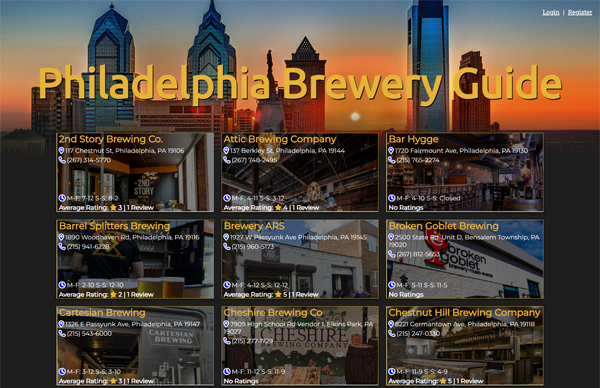
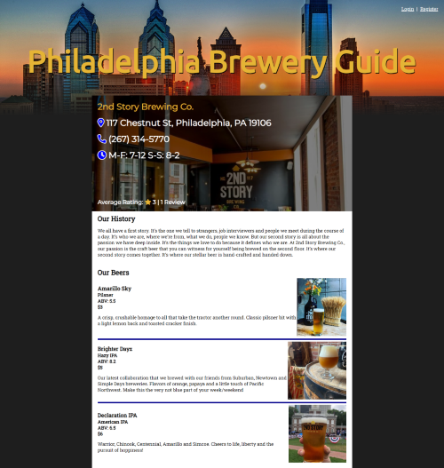
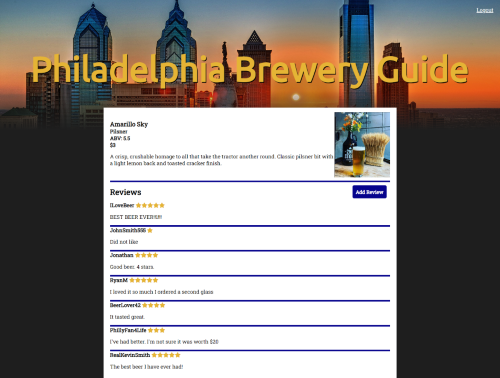
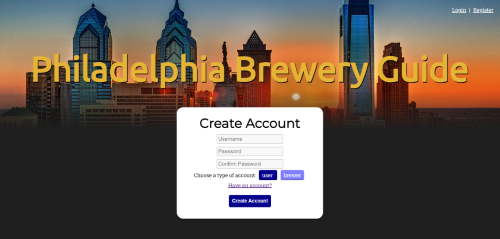
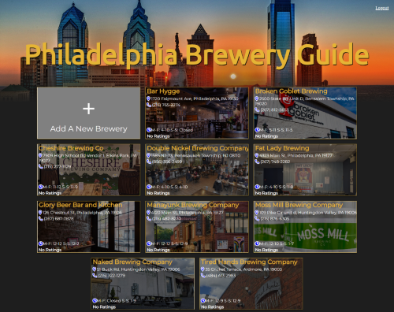
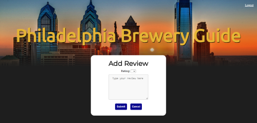
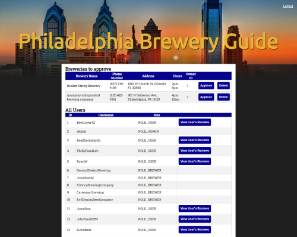
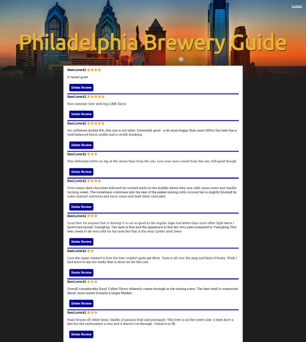

Bee Inspection App
My parents are bee keepers as a hobby. They wanted to start recording the state of the hives whenever they inspect the hive. I have created a web application that they can quickly and easily record the data using their phone. The purpose of recording the inspections is to try to find patterns and possibly use the data from last year to predict what will happen this year. The app uses Java, SQL, JSON, HTML, CSS, Javascript, React.js, and Bootstrap. View the project on Github.


Philadelphia Brewery Guide
For our final capstone at Tech Elevator,my team was tasked with creating a brewery finder web app for the city of Philadelphia. The app allowed users and brewery owners to create an account. The app has a SQL database that stores the user info, breweries, beer, and reviews. The front end runs on Vue.js framework, with a REST API to complete the MCV. View the project on Github.








War Card Game
One of the first side projects I started working on during the Tech Elevator bootcamp was a CLI of the card game War. The application evolved as we were taught the different parts of full stack development. I knew I wanted to make a web interface for the game, so I created an API. After the bootcamp concluded, I wanted to learn React.js, so I used React to build the front end of the app. View the project on Github.


Hangman CLI
Another one of my early side projects was the game hangman. It currently is just a CLI, but I plan on eventually turning it into a web app. The game runs on Java, and I have created an API in preparation of turning it into a web app. When a new game is started, a work is picked at random from the word bank, converts the word into an array list of underscores to represent each letter in the word and prints out an ascii gallows. The ascii output is stored in 7 arrays, one for each line of the ascii gallows. It asks the user to guess a letter. If the guess isn't in the word, it adds the guess to a list of wrong guesses and adds a body part to the proper gallows array and prints the gallows again. If the guess is correct, it replaces every underscore in the list were that letter should be. The game runs within a while loop, so that the user can play as many times as they want without having to resart the program. When a game ends, a reset method is called which resets the gallows, clears the list of underscores, picks a new word and random and starts the game over. View the project on GitHub.